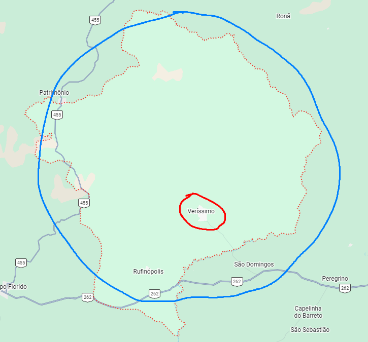
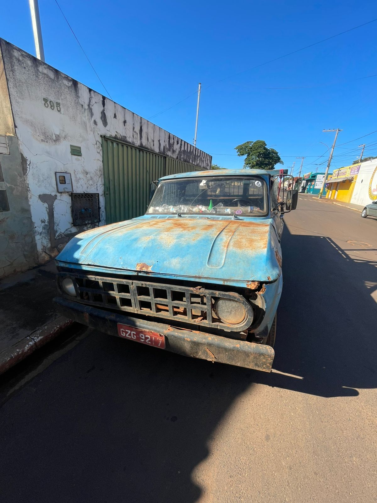
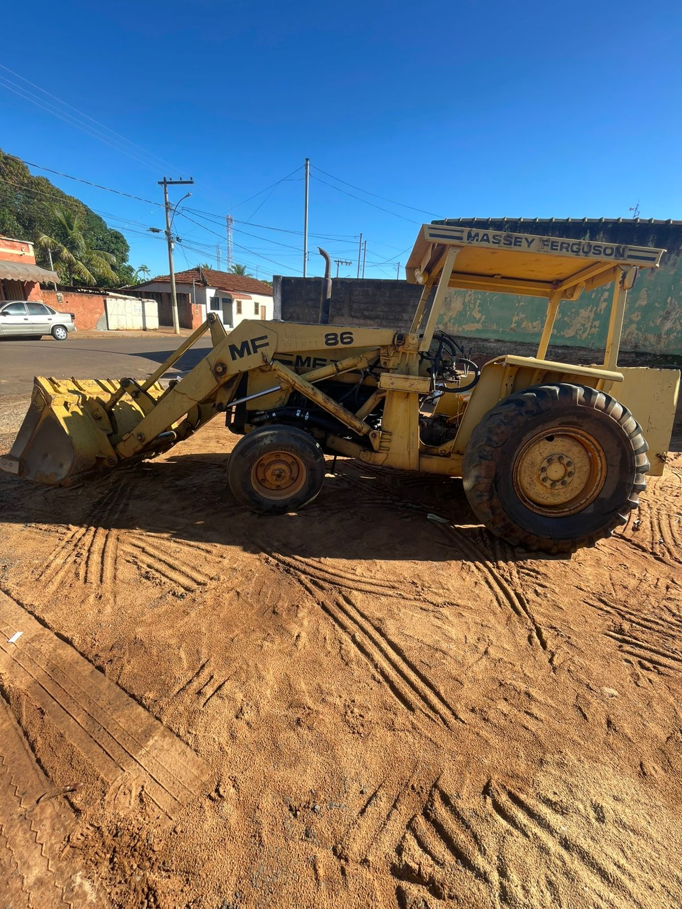
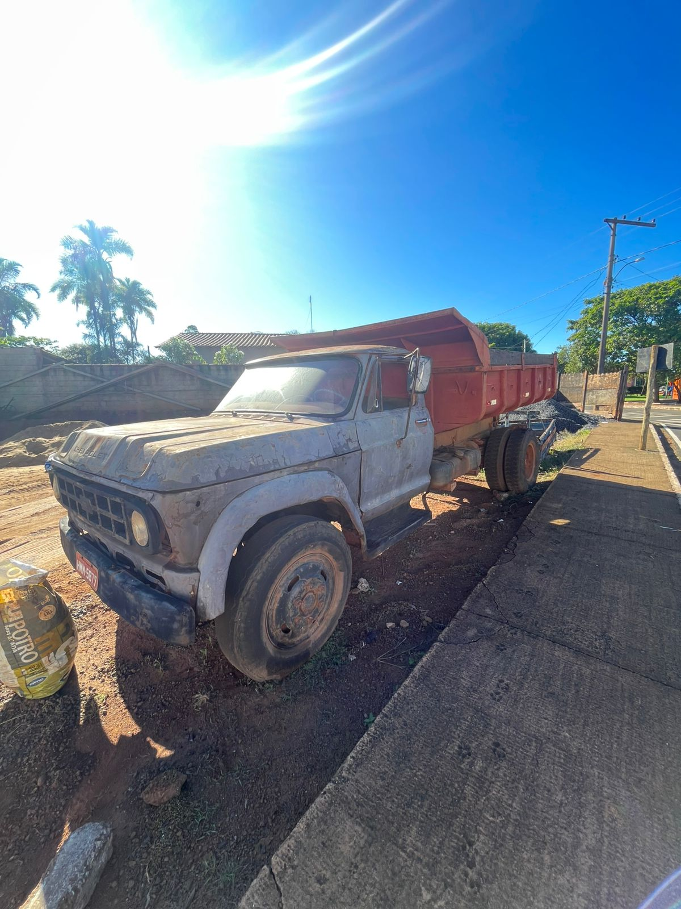

A ALC Materiais de Construção estrutura suas atividades logísticas com o objetivo de garantir eficiência no armazenamento, controle de estoque e distribuição de produtos na região de Veríssimo, no estado de Minas Gerais.
O processo logístico inicia-se com a organização do estoque, no qual os materiais são armazenados de forma estratégica, considerando critérios como tipo de produto, rotatividade e facilidade de acesso. Tal organização permite maior agilidade na separação e no atendimento dos pedidos, reduzindo o tempo de espera dos clientes.
No que se refere à distribuição, a empresa realiza entregas tanto na zona urbana quanto na zona rural de Veríssimo e municípios vizinhos, utilizando veículos próprios adequados para o transporte de diferentes tipos de materiais, desde itens leves até cargas mais pesadas, como cimento e areia.
Além disso, a ALC Materiais de Construção adota práticas que visam otimizar rotas de entrega, reduzir custos operacionais e assegurar a pontualidade no atendimento, fatores essenciais para a satisfação dos clientes e para a competitividade no mercado regional.
A empresa também prioriza a segurança no transporte e no manuseio dos produtos, garantindo que os materiais cheguem em perfeitas condições ao destino final.
Dessa forma, a logística e distribuição da ALC Materiais de Construção desempenham papel fundamental na eficiência operacional da empresa, contribuindo para a qualidade dos serviços prestados e para o fortalecimento de sua atuação na região de Veríssimo–MG.
Link para o google maps: aqui
NO CIRCULO VERMELHO: não cobramos frete pois, são lugares de clientes fixos.
NO CIRCULO AZUL: temos uma taxa de 80,00R$ por 7 KM percorridos pois, nem sempre temos clientes para distribuir a quantidade de materiais que pagam o combustivel e uso de maquinas, camionetes e caminhões etc...



